सुविकल्प: Mine Repurposing Tool
Select factors and sub-factors to discover suitable repurposing options for your mining site
![Coal Controller Organisation emblem]()
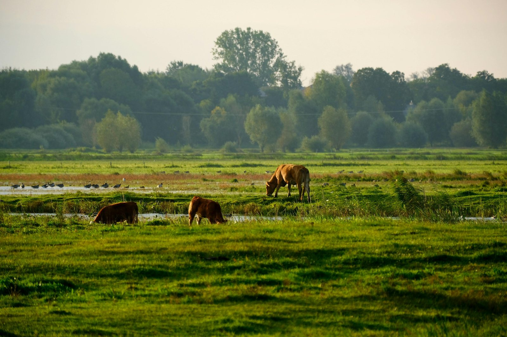
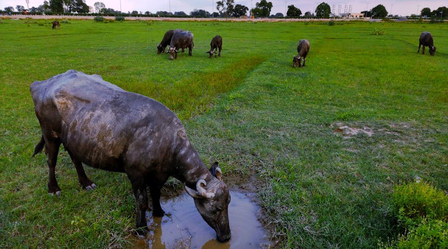
Concept for Non-Dairy Livestock Zones and Livestock–Fodder Livelihood Clusters on closed coal mine land — covering goat rearing, sheep, poultry, piggery, duckery, fodder cultivation, and egg–meat–manure value chains. Site suitability, species selection, and indicative scale planning are covered.
This concept proposes the development of Non-Dairy Livestock Zones / Livestock–Fodder Livelihood Clusters on closed, reclaimed, or repurposed coal mine land as part of a sustainable mine-closure and post-mining land-use strategy. The model excludes dairy farming as a primary component and instead focuses on goat rearing and goat-meat value chain; sheep rearing and wool/meat-based livelihood; piggery units where socially acceptable and market-linked; backyard poultry and commercial poultry units; duckery in water-rich landscapes; fodder cultivation, fodder banks and fodder-tree systems; animal shelters, paddocks and controlled grazing zones; egg, meat, manure, compost and biogas value chains; veterinary, vaccination, breeding and training services; and SHG / FPO / cooperative / producer-group-based livelihood enterprises.
India had 74.26 million sheep, 148.89 million goats, 9.06 million pigs and 851.81 million poultry birds as per the 20th Livestock Census. The National Livestock Mission specifically supports entrepreneurship in poultry, sheep, goat and piggery, along with feed and fodder development.
Non-dairy livestock is suitable for selected closed coal mine areas where dairy may not be ideal due to water demand, milk route limitations, higher daily management needs, or overlap with a separate dairy project.
The following matrix provides a structured checklist for assessing the suitability of the proposed site for the selected repurposing option. It identifies the key physical, technical, environmental, infrastructure, legal, and owner-side readiness parameters that should be reviewed before the project is advanced to the next stage of development. The purpose of this matrix is to help the project owner understand existing site conditions, technical requirements, potential constraints, and preparatory actions required before feasibility studies, approvals, or tendering are initiated.
| Category | What to Assess / Prepare | Why It Matters | Owner-Side Readiness |
|---|---|---|---|
| Land status | Closure status, land ownership, permissible post-mining use | Legal viability for livestock, fodder and support infrastructure | Closure note |
| Land safety | Subsidence, slope stability, backfilled area stability, unsafe zones, waterlogging | Ensures animal, worker and community safety | Safety zoning map |
| Soil condition | Fertility, pH, heavy metals, contamination, salinity, organic matter | Important for fodder safety, grazing suitability and manure use | Soil and contamination report |
| Water availability | Drinking water, washing, poultry/piggery sanitation, duckery ponds, fodder irrigation | Determines species selection and operating scale | Water balance plan |
| Fodder potential | Green fodder, dry fodder, fodder trees, grazing strips, silage, hay, crop residues | Feed cost is a major determinant of viability | Fodder development plan |
| Species suitability | Goat, sheep, pig, poultry, duck, rabbit or other local species suitability | Prevents unsuitable species introduction | Species suitability note |
| Climate | Heat stress, humidity, rainfall, ventilation, disease-prone seasons | Affects mortality, productivity and shed design | Agro-climatic note |
| Pollution risk | Dust, fly ash, contaminated runoff, mine-water quality, chemical exposure | Protects animal health and food-chain safety | Environmental screening |
| Veterinary access | Nearest veterinary hospital, vaccination, disease diagnosis, mobile vet support | Essential for mortality reduction and productivity | Veterinary linkage plan |
| Market access | Goat market, sheep market, pork market, poultry trader, egg market, institutional buyer | Determines revenue and offtake | Market linkage note |
| Community proximity | SHGs, FPOs, livestock households, land-losers, unemployed youth | Enables livelihood integration | Beneficiary mapping |
| Access | Roads, feed transport, animal transport, egg/meat logistics | Daily logistics and emergency response depend on access | Access plan |
| Power supply | Lighting, brooding, water pumps, feed mixing, cold chain if needed | Supports poultry, piggery and processing | Power plan |
| Waste management | Dung, poultry litter, piggery slurry, dead birds/animals, wash water | Prevents odour, disease and pollution | Waste management plan |
| Biosecurity | Quarantine, vaccination, disinfection, visitor control, disease reporting | Critical for poultry, piggery and small-ruminant units | Biosecurity plan |
| Animal welfare | Space, shade, bedding, ventilation, flooring, drinking water, isolation area | Reduces mortality and improves productivity | Animal welfare protocol |
| Public safety | Fencing, odour buffer, traffic, stray animal control, visitor management | Protects nearby villages and prevents nuisance | Zoning and buffer plan |
The following matrix presents an indicative relationship between available site area, project scale, technical configuration, and likely development potential. It is intended to support preliminary planning by helping the project owner identify the appropriate scale and configuration for the proposed repurposing option. The values and recommendations are indicative and should be refined through detailed feasibility studies, site surveys, engineering assessments, and relevant technical and commercial evaluations.
| Land Area | Recommended Scale | Configuration | Use Case |
|---|---|---|---|
| 1–5 ha | Pilot non-dairy livestock unit | 100–300 goats/sheep, or 500–2,000 backyard poultry birds, or small duckery/rabbitry, fodder patch, compost unit | Proof of concept |
| 5–20 ha | Community livestock livelihood cluster | Goatery, sheep unit, backyard poultry, duckery where water exists, fodder plots, veterinary room, manure yard, SHG operations | SHG / FPO livelihood |
| 20–50 ha | Integrated livestock–fodder landscape | Goat/sheep paddocks, poultry sheds, piggery where suitable, fodder bank, composting, biogas and training facilities | Cluster-level rural economy |
| 50–100 ha | Non-dairy livestock park | Multi-species livestock units, egg/meat aggregation, feed store, fodder bank, veterinary centre, training centre, manure/biogas unit | PPP / CSR / cooperative model |
| 100 ha+ | Regional livestock and circular-economy ecosystem | Multi-zone goat, sheep, poultry, piggery, duckery, fodder, processing linkage, compost/CBG and rural enterprise zone | Just-transition flagship |
Suggested species by site condition
| Site Condition | More Suitable Livestock Option | Comment |
|---|---|---|
| Dry reclaimed land with shrubs/grasses | Goatery / sheep rearing | Good for controlled grazing and fodder-tree models |
| Water-rich reclaimed depressions | Duckery / integrated duck-fish model | Only after water testing and ecological clearance |
| Villages with women SHGs | Backyard poultry, goatery | Low-entry livelihood model |
| Areas near meat markets | Goatery, sheep, piggery, poultry | Stronger offtake potential |
| Areas with strict water limitation | Goatery, sheep, backyard poultry | Avoid high-water piggery or large commercial poultry |
| Areas near feed suppliers | Poultry / piggery | Feed logistics become easier |
| Sensitive mine land | Stall-fed goatery, poultry, fodder bank | Avoid uncontrolled grazing |
Seven implementation models are available for non-dairy livestock development on closed mine land — from EPC-based basic sheds to Hybrid multi-party livelihood platforms. Model selection is driven by land size, community integration, investment appetite, and the scale of goatery, poultry, piggery, fodder, and circular-economy components.
The following table outlines the possible implementation models that may be considered for developing the proposed repurposing project. These models differ in terms of ownership structure, funding responsibility, private sector participation, operational control, and long-term risk allocation. The purpose of this table is to help the project owner compare broad development routes and select an implementation approach that aligns with its financial capacity, institutional preference, risk appetite, and long-term asset management objectives.
| Model | Suitability | Comment |
|---|---|---|
| EPC | Moderate | Suitable for basic sheds, fencing, water points, fodder plots, manure yards and training rooms |
| EPC + O&M / Facility Mgmt | High | Strong for owner-controlled livelihood clusters with outsourced animal care, feed management, veterinary coordination and SHG support |
| BOOT | High | Suitable for commercial poultry, piggery, goat-meat aggregation, feed units or processing-linked projects with eventual asset transfer |
| BOO | Moderate | Suitable for private commercial poultry / piggery / meat enterprise where community obligations are contractually mandated |
| DBFOT | High | Suitable for large non-dairy livestock parks, feed banks, egg / meat aggregation, processing, composting and biogas infrastructure |
| Concession / Lease-Develop-Operate | Very High | Strong for community-linked goatery, sheep, poultry and piggery enterprises with local employment and revenue-sharing |
| Hybrid | Very High | Most flexible model combining mine-owner land, CSR, NLM support, private operator, SHG / FPO and veterinary institutions |
The following comparative assessment evaluates the major implementation models across key decision parameters such as investment requirement, ownership control, financing responsibility, contractual complexity, risk transfer, and long-term economic benefit. This matrix is intended to support early-stage decision-making by highlighting the relative strengths and limitations of each model. The final choice of model should be guided by the specific circumstances of the project, including its scale, commercial viability, applicable policy framework, and the owner's institutional preference.
| Evaluation Parameter | EPC | EPC+O&M | BOOT | BOO | DBFOT | Concession | Hybrid |
|---|---|---|---|---|---|---|---|
| Upfront investment by Mine Owner | High | High to Moderate | Low to Moderate | Low | Low to Moderate | Low to Moderate | Variable |
| Need for private financing | Low | Low | High | High | High | Moderate to High | Variable |
| Ownership retained by Mine Owner | Yes | Yes | Land retained; assets may transfer later | Limited / as structured | Usually land retained | Land retained | Usually retained |
| Long-term control over land use | High | High | Moderate | Low to Moderate | Moderate to High | Moderate to High | High if structured well |
| Suitability for welfare objective | High | Very High | High if mandated | Moderate | High | Very High | Very High |
| Suitability for local livelihood | Moderate | Very High | High | Moderate | High to Very High | Very High | Very High |
| Suitability for ecological restoration | Moderate | High | High | Moderate | High | High | Very High |
| Suitability for community participation | Moderate | High | Moderate to High | Low to Moderate | High if mandated | Very High | Very High |
| Suitability for SHG / FPO integration | Moderate | High | Moderate | Low to Moderate | High if required | Very High | Very High |
| Suitability for long-term animal care | Low to Moderate | High | High | High | High | Very High | Very High |
| Revenue potential | Low to Moderate | Moderate to High | High | High | High | Moderate to High | Variable to High |
| Owner revenue benefit | Low to Moderate | Moderate to High | Moderate / deferred | Low to Moderate | Moderate to High | Moderate through lease / revenue share | Variable to High |
| O&M burden on owner | High | Moderate | Low | Low | Low | Low to Moderate | Shared |
| Contractual complexity | Low | Moderate | High | High | Very High | High | High |
| Suitability for sensitive mine land | High if owner controls access | High | Moderate if regulated | Low to Moderate | High with safeguards | High with monitoring | Very High |
| Suitability for phased development | Moderate | High | Moderate | Moderate | High | Very High | Very High |
| Commercial bankability | Low | Low to Moderate | Moderate to High | High | High | Moderate to High | Variable |
| Public accountability | High | High | Moderate | Low | Moderate to High | Moderate to High | Very High |
| Risk to Mine Owner | High | Moderate | Low to Moderate | Low | Low to Moderate | Low to Moderate | Shared |
| Risk to private party | Low | Low to Moderate | High | High | High | Moderate to High | Shared |
| Best use case | Basic sheds, fencing, water and fodder infrastructure | Owner-controlled goatery / poultry / sheep livelihood with O&M support | Commercial poultry / piggery / goat-meat project with transfer | Private livestock venture | Large livestock park with feed, processing and biogas | Community-linked livestock enterprise | Welfare + livelihood + commercial + circular-economy balance |
| Overall suitability for Non-Dairy Livestock | Moderate | High | High | Moderate | High | Very High | Very High / Most Suitable |
The following table explains how major project responsibilities are typically allocated under different implementation models. It covers key functional areas such as site availability, financing, design and construction, regulatory approvals, operation and maintenance, revenue collection, asset ownership, and end-of-term transfer. This helps clarify the respective roles of the project owner, private developer, EPC contractor, operator, or concessionaire, and supports the preparation of tender documents and contractual structures.
| Responsibility Area | EPC | EPC+O&M / FM | BOOT | BOO | DBFOT | Concession / Lease | Hybrid |
|---|---|---|---|---|---|---|---|
| Site / land availability | Mine Owner | Mine Owner | Mine Owner / authority | Mine Owner / developer, as agreed | Mine Owner / authority | Mine Owner / authority | Mine Owner / shared |
| Land ownership | Mine Owner | Mine Owner | Mine Owner retains land; developer gets project rights | As structured | Mine Owner retains land | Mine Owner retains land | Mine Owner generally retains land |
| Mine closure linkage | Mine Owner | Mine Owner | Mine Owner + developer compliance | Mine Owner / developer | Mine Owner + concessionaire | Mine Owner + concessionaire | Mine Owner + partners |
| Safety zoning | Mine Owner | Mine Owner | Shared | Shared | Shared | Shared | Shared |
| Soil and contamination screening | Mine Owner | Mine Owner | Shared | Shared | Shared | Shared | Mine Owner initially; shared later |
| Livestock master planning | Mine Owner / consultant | Mine Owner + O&M agency | Shared / developer-refined | Developer-led | Shared | Shared | Shared |
| Species selection | Mine Owner / consultant | Mine Owner + O&M agency | Developer / expert | Developer | Concessionaire | Concessionaire / livestock expert | Shared with community inputs |
| Breed selection | Mine Owner / consultant | Mine Owner + O&M agency | Developer / expert | Developer | Concessionaire | Concessionaire / livestock expert | Shared |
| Animal / bird procurement | Mine Owner / EPC support | Mine Owner / O&M agency | Developer | Developer | Concessionaire | Concessionaire / operator | Shared |
| Livestock shed construction | EPC contractor | EPC contractor / O&M agency | Developer | Developer | Concessionaire | Concessionaire / operator | Shared |
| Fodder plot development | EPC contractor | EPC contractor + O&M agency | Developer / owner support | Developer | Concessionaire | Concessionaire / local groups | Shared |
| Feed and fodder management | Mine Owner | O&M agency | Developer | Developer | Concessionaire | Concessionaire / operator | Operator / SHG / FPO |
| Egg / meat collection point | EPC contractor / owner | Owner / O&M agency | Developer | Developer | Concessionaire | Concessionaire / operator | Owner + operator / cooperative |
| Processing / aggregation unit | Mine Owner / separate agency | O&M agency / market partner | Developer | Developer | Concessionaire | Concessionaire / private operator | Shared / cluster-based |
| Water points and sanitation | EPC contractor | EPC contractor + O&M agency | Developer | Developer | Concessionaire | Concessionaire | Shared |
| Veterinary linkage | Mine Owner | O&M agency | Developer | Developer | Concessionaire | Concessionaire / operator | Shared / technical partner |
| Vaccination and disease control | Mine Owner / consultant | O&M agency | Developer | Developer | Concessionaire | Concessionaire | Shared |
| Breeding support | Mine Owner | O&M agency / veterinary partner | Developer | Developer | Concessionaire | Concessionaire | Shared |
| Quarantine and induction | Mine Owner / consultant | O&M agency | Developer | Developer | Concessionaire | Concessionaire | Shared |
| Day-to-day livestock operations | Mine Owner | O&M agency | Developer | Developer | Concessionaire | Concessionaire / operator | SHG / FPO / operator |
| Community mobilization | Mine Owner | Mine Owner + O&M agency | Developer if mandated | Developer if mandated | Concessionaire if mandated | Concessionaire + NGO / FPO | NGO / SHG / FPO + owner |
| Local employment | Mine Owner-controlled | Mine Owner-controlled through contract | Contract-based | Developer policy / contract-based | Contract-based | Contract-based | Strongly configurable |
| SHG / FPO participation | Mine Owner-controlled | Mine Owner + O&M agency | Contract-based | Optional unless mandated | Contract-based | Strong contractual role | Core feature |
| Training and capacity building | Mine Owner | O&M agency / livelihood partner | Developer / operator | Developer | Concessionaire | Concessionaire / NGO / FPO | Shared; often NGO-led |
| Product ownership | Mine Owner | Mine Owner / as per O&M contract | Developer during concession | Developer | Concessionaire during concession | As per concession / lease terms | Shared as per agreement |
| Dung / litter / compost / biogas ownership | Mine Owner | Mine Owner / operator arrangement | Developer | Developer | Concessionaire | Concessionaire / SHG / FPO | Shared |
| Revenue collection | Mine Owner | Mine Owner / operator on behalf of owner | Developer during concession | Developer | Concessionaire | Concessionaire / shared | Shared |
| Revenue sharing with owner | Not applicable / owner receives all | Owner receives after agency payments | Concession fee / revenue share | Lease / fixed charges | Concession fee / revenue share | Lease rent / concession fee / revenue share | As structured |
| Market linkage | Mine Owner | O&M agency / cooperative / market partner | Developer | Developer | Concessionaire | Concessionaire / FPO / cooperative | FPO / operator / market partner |
| Branding and certification | Mine Owner | O&M agency / marketing partner | Developer | Developer | Concessionaire | Concessionaire / operator | Shared |
| Approvals and permits | Mine Owner | Mine Owner with agency support | Shared | Shared / developer-led | Shared | Shared | Shared |
| Food safety compliance | Mine Owner | Mine Owner + O&M agency | Developer | Developer | Concessionaire | Concessionaire | Shared |
| Environmental compliance | Mine Owner | Mine Owner + O&M agency | Developer during concession | Developer | Concessionaire | Concessionaire | Shared |
| Monitoring and reporting | Mine Owner | Mine Owner + O&M agency | Mine Owner + developer | Developer / owner oversight | Independent monitoring + owner | Owner + concessionaire | Owner + independent agency |
| O&M risk | Mine Owner | O&M agency, with owner oversight | Developer | Developer | Concessionaire | Concessionaire / operator | Shared |
| Commercial risk | Mine Owner | Mostly Mine Owner | Developer | Developer | Concessionaire | Concessionaire | Shared |
| Community welfare obligations | Mine Owner-controlled | Mine Owner-controlled | Contract-based | Weak unless mandated | Contract-based | Strongly contract-based | Strongest and most flexible |
| Asset transfer at end | No | No | Yes | No | Yes | As agreed | As agreed |
| Best suited role | Basic livestock infrastructure creator | Owner-controlled livestock operator | Commercial developer-operator | Private livestock owner | Structured PPP concessionaire | Long-term livelihood operator | Multi-party livelihood + commercial platform |
Non-dairy livestock repurposing generates revenue through meat, eggs, live animals, manure, compost, biogas and fodder value chains. Funding logic ranges from full mine-owner investment under EPC to blended finance under Hybrid models. Livelihood outcomes are strongest under EPC+O&M, Concession, and Hybrid models where SHG / FPO participation and local employment are contractually embedded.
The following table presents the broad funding logic for each implementation model. It explains who is expected to finance the project, the level of owner-side funding requirement, and the commercial rationale behind each structure. This section is intended to help the project owner assess whether the project is more suitable for owner-funded development, private investment, public-private partnership, lease or concession structure, or a hybrid funding arrangement.
| Model | Funding Source | Owner Funding Requirement | Suitability for Non-Dairy Livestock |
|---|---|---|---|
| EPC | Mine owner budget / mine closure fund / CSR | High | Suitable for basic sheds, fencing, water points, fodder plots, manure yards and training facility setup |
| EPC + O&M / Facility Mgmt | Mine owner budget + O&M budget + CSR | High to Moderate | Strong fit where owner wants control over welfare, SHG participation, animal care, fodder management and training |
| BOOT | Private developer capital + possible CSR / VGF / grant support | Low to Moderate | Suitable for commercial poultry, piggery, goat-meat aggregation, feed units and eventual asset transfer |
| BOO | Private developer capital | Low | Suitable only for commercially driven livestock projects; less preferred where community control is important |
| DBFOT | Private concessionaire + public / CSR support + possible VGF | Low to Moderate | Suitable for large livestock parks with feed banks, processing, training centres and biogas / CBG units |
| Concession / Lease-Develop-Operate | Private operator / cooperative / FPO / SHG federation / NGO / CSR / blended finance | Low to Moderate | Very suitable for community-linked livestock with livelihood obligations, lease fee, revenue sharing and local employment |
| Hybrid | Mine owner + CSR + government schemes + livestock cooperative + private operator + SHG / FPO + NGO + grants | Variable | Most suitable for balancing livelihood, non-dairy livestock value chains, circular economy and owner revenue participation |
The following table explains how revenue may be generated under different implementation models and identifies who is likely to receive the principal project income. It also describes the nature and extent of the financial benefit available to the project owner, whether through direct project revenue, cost savings, lease income, concession fees, revenue sharing, service charges, or eventual asset transfer. This comparison is intended to support the selection of a commercially appropriate model for the proposed repurposing project.
| Model | How Revenue is Generated | Who Receives Main Revenue | Owner's Financial Benefit |
|---|---|---|---|
| EPC | Sale of goats, sheep, pigs, poultry birds, eggs, manure, compost, fodder, training fees and biogas | Mine Owner | Full revenue retained by owner, but owner bears full CAPEX, O&M, animal health, feed, fodder and market risk |
| EPC + O&M / Facility Mgmt | Livestock product sales, egg sales, manure, compost, biogas, breeding services, training and fodder bank revenue | Mine Owner after paying O&M agency | High benefit; owner retains revenue while outsourcing operations and technical management |
| BOOT | Developer earns from poultry, piggery, goat / sheep rearing, meat aggregation, feed, compost and training during concession | Developer / concessionaire during concession | Lease rent, concession fee, revenue share, local economic uplift and asset transfer at end |
| BOO | Long-term revenue from livestock products, eggs, meat, feed, compost, biogas and livestock services | Private developer | Limited direct benefit; typically lease rent, fixed charges or premium payments |
| DBFOT | Structured revenue from livestock production, egg / meat aggregation, feed bank, compost, biogas and training | Concessionaire during concession | Concession fee, lease rent, revenue share, performance-linked payments and asset transfer at end |
| Concession / Lease-Operate-Develop | Revenue from goatery, sheep, poultry, piggery, SHG / FPO production, manure, biogas, training and market linkage | Concessionaire / operator as per agreement | Lease rentals, revenue share, improved land value and indirect socio-economic benefits |
| Hybrid | Mixed revenue from livestock products, SHG / FPO enterprises, fodder, manure, compost, biogas, grants, CSR support and training | Shared between owner, operator, SHG / FPO, cooperative, NGO as structured | Variable to high; owner benefits through revenue share, reduced O&M burden, ESG gains and enhanced land value |
The following table assesses the likely local livelihood and employment potential of each implementation model. It considers the extent to which each model can support construction-phase jobs, long-term operational employment, local procurement opportunities, skill development, community participation, and associated support services. This section is particularly relevant where the repurposing project is expected to contribute to post-mining or post-operational economic transition and sustained local community benefit.
| Model | Local Job Potential | Why | Overall Suggestibility for Local Livelihood |
|---|---|---|---|
| EPC | Moderate | Creates short-term jobs in shed construction, fencing, water systems, fodder plot development and basic training. Long-term jobs depend on owner-led operations after completion. | Moderate |
| EPC + O&M / Facility Mgmt | High to Very High | Supports sustained employment in animal care, feeding, shed cleaning, egg handling, goat / sheep management, piggery care, poultry care, manure management and SHG facilitation. | Very High |
| BOOT | High | Generates jobs during development and operation. Local employment can be strong if the agreement mandates local hiring, SHG / FPO participation, training and procurement from local households. | High |
| BOO | Moderate | Can create poultry, piggery, processing, packaging and marketing jobs, but local livelihood depends mainly on private developer policy unless contractually mandated. | Moderate |
| DBFOT | High to Very High | Suitable for large non-dairy livestock parks with egg / meat aggregation, feed banks, processing, biogas, composting, training centres and veterinary services. | High to Very High |
| Concession / Lease-Operate-Develop | Very High | Strong model for long-term local livelihood through SHG / FPO participation, goatery, sheep, poultry, piggery, fodder cultivation, aggregation, training and market linkage. | Very High |
| Hybrid | Very High | Best suited for combining mine-owner support, private / cooperative expertise, NGO facilitation, SHG / FPO participation, CSR support and community benefit obligations. | Very High / Most Suitable |
The following combined comparison brings together three important dimensions of project structuring: revenue potential, owner-side financial benefit, and local livelihood generation. It provides a consolidated view of how each implementation model performs across commercial, institutional, and community-development perspectives. This matrix is intended to support balanced decision-making where the objective extends beyond financial return to include sustainable site reuse and long-term local economic benefit.
The following table assesses the likely local livelihood and employment potential of each implementation model. It considers the extent to which each model can support construction-phase jobs, long-term operational employment, local procurement opportunities, skill development, community participation, and associated support services. This section is particularly relevant where the repurposing project is expected to contribute to post-mining or post-operational economic transition and sustained local community benefit.
| Model | Main Revenue Source | Owner Profitability | Local Job Creation Potential | Overall Comment |
|---|---|---|---|---|
| EPC | Livestock sales, eggs, manure, compost, fodder, training and future value-added products | Moderate to High, but owner bears full CAPEX, O&M, animal health, feed, fodder and market risk | Moderate | Useful for initial livestock setup, but weak for long-term livelihood unless followed by structured O&M |
| EPC + O&M / Facility Mgmt | Livestock products, eggs, fodder, manure, compost, biogas, training and breeding services | High, as owner retains revenue after O&M payments | High to Very High | Strong where owner wants control, welfare impact and sustained employment |
| BOOT | Commercial poultry, piggery, goat / sheep production, aggregation, feed, branding, compost and biogas | Moderate through concession fee, lease rent, revenue share and eventual asset transfer | High | Suitable for commercial livestock with mandatory livelihood clauses |
| BOO | Long-term private revenue from livestock products, eggs, meat, feed, processing, compost and biogas | Low to Moderate, mostly from lease rent, fixed charges or premium | Moderate | Use cautiously where community benefit and owner control are not primary |
| DBFOT | Livestock value chain, feed bank, egg / meat aggregation, processing, biogas, compost and training centre | Moderate to High through concession fee, lease rent, revenue share and transfer terms | High to Very High | Good for large structured PPP projects needing private finance and professional operation |
| Concession / Lease-Operate-Develop | Livestock operations, SHG / FPO production, training, fodder bank, manure / biogas | Moderate to High through lease rent, concession fee, revenue share and improved land value | Very High | Very suitable for community-linked livestock with livelihood obligations |
| Hybrid | Mixed revenue from livestock products, SHG / FPO enterprises, fodder, training, CSR support, grants, biogas and compost | Variable to High depending on revenue-sharing and support structure | Very High | Most suitable for balancing mine-closure, livelihood, circular-economy and commercial objectives |
Pre-RFP readiness for non-dairy livestock development requires land safety confirmation, species suitability assessment, market and veterinary linkage planning, and community mobilization. Post-award activities include infrastructure construction, animal procurement, training, market linkage, and phased scale-up led by the selected operator, concessionaire, or SHG / FPO partner.
The following section identifies the key owner-side preparatory actions that should ideally be completed before issuing the first Request for Proposal. These actions are aimed at reducing uncertainty for prospective bidders, improving project bankability, clarifying site availability, identifying approval pathways and risks, and defining the technical and commercial scope of the project. Completing these preparatory steps before tendering can improve bid quality, attract credible responses, and reduce the risk of delays during project implementation.
Before issuing an RFP for a Livestock Farming, Fodder Landscapes and Meat–Egg–Manure Value-Chain Cluster as a mine-repurposing project, the mine owner should prepare the following in priority order:
The following section lists the principal activities that may be undertaken by the selected contractor, developer, concessionaire, operator, or implementation agency after award of the project. These activities generally include detailed site investigations, engineering design, statutory submissions and approvals, equipment procurement, construction, commissioning, operational planning, staff training, and performance monitoring. The distinction between pre-RFP owner preparedness and post-award implementation responsibilities helps ensure an appropriate and efficient allocation of effort across the project development cycle.
After award, the selected concessionaire / contractor / O&M agency / livestock operator can take up the following activities in chronological order:
The following implementation pathway presents a practical high-level sequence for advancing the proposed repurposing concept from initial approval through to project execution and long-term operation. It outlines the broad stages of concept approval, preliminary studies, model selection, bid preparation, procurement, detailed design, statutory approvals, construction, commissioning, and ongoing operation. This pathway is indicative and should be adapted to reflect the specific complexity, regulatory requirements, financing structure, and site conditions applicable to the project.
The Hybrid Non-Dairy Livestock–Fodder Livelihood Cluster is the most recommended model for closed coal mine repurposing. This section outlines the preferred models, key references, and abbreviations used throughout the PRISM framework.
The following way forward summarizes the preferred development approach for the proposed repurposing option, based on the assessment presented in PRISM (Post Mining Repurposing Implementation and Strategy Models). It identifies the most suitable implementation models in order of preference, highlights key technical and due-diligence considerations, and outlines the recommended next steps and broad development logic. This section is intended to guide internal decision-making and support the project owner in progressing from concept-stage evaluation toward feasibility assessment, project structuring, regulatory approvals, and implementation planning.
Preferred Models, in order: (1) Hybrid Model, (2) Concession / Lease-Develop-Operate, (3) EPC + O&M / Facility Management, (4) DBFOT
Why preferred: Hybrid is preferred because livestock projects require land, fodder, veterinary support, producer participation and market linkage. The hybrid mix should include mine-owner land + SHG / FPO livestock units + veterinary agency + private buyer / processor linkage.
Secondary option: BOOT may be used where commercial poultry, piggery, feed production or processing with eventual transfer is planned.
Suggestable technical care: Animal housing, fodder, water, disease control, vaccination, biosecurity, waste management, community acceptance, animal welfare and market access must be ensured.
Recommended development logic: Start with low-risk goatery, sheep units, backyard poultry, fodder banks and composting. Take up piggery, commercial poultry and meat-processing models only after biosecurity, market and waste-management readiness are confirmed.
Disclaimer — All repurposing interventions proposed under P.R.I.S.M. shall remain subject to applicable mining laws, land-use regulations, environmental approvals, mine-closure conditions, forest and biodiversity regulations, groundwater permissions, and any other statutory approvals as may be applicable. Land ownership is proposed to remain with the mine owner / competent authority unless otherwise permitted under applicable law.
| Abbreviation | Full Form |
|---|---|
| BOO | Build, Own, Operate |
| BOOT | Build, Own, Operate, Transfer |
| CAPEX | Capital Expenditure |
| CBG | Compressed Bio-Gas |
| CCO | Coal Controller Organisation |
| CSR | Corporate Social Responsibility |
| DBFOT | Design, Build, Finance, Operate, Transfer |
| DPR | Detailed Project Report |
| EPC | Engineering, Procurement and Construction |
| ESG | Environmental, Social and Governance |
| FM | Facility Management |
| FPO | Farmer Producer Organization |
| GOBARdhan | Galvanizing Organic Bio-Agro Resources Dhan |
| NGO | Non-Governmental Organization |
| NLM | National Livestock Mission |
| O&M | Operation and Maintenance |
| PPP | Public-Private Partnership |
| RFP | Request for Proposal |
| SHG | Self-Help Group |
| VGF | Viability Gap Funding |
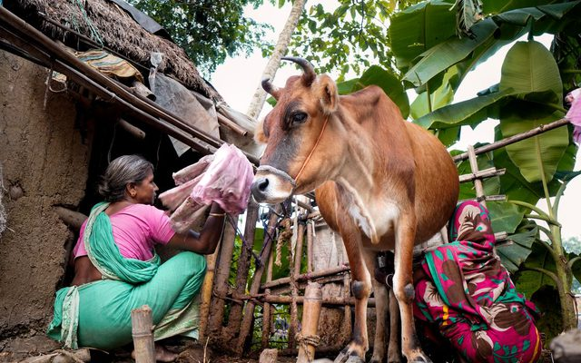
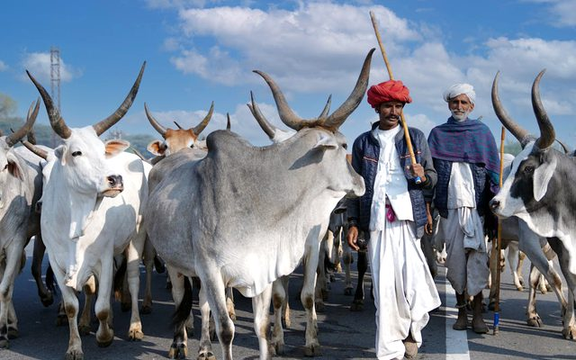
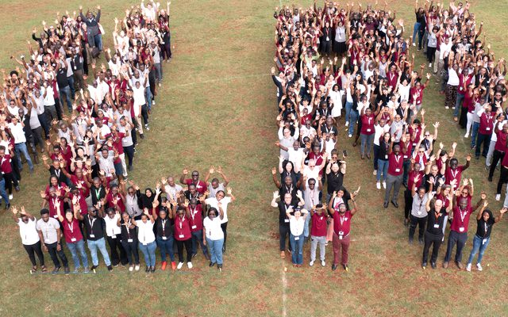
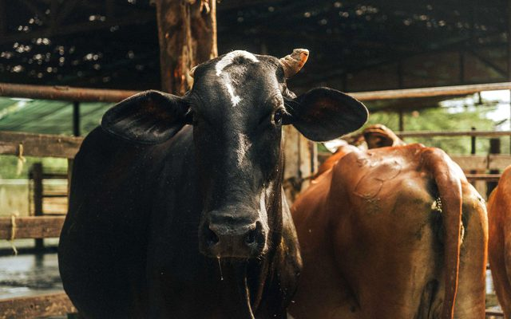
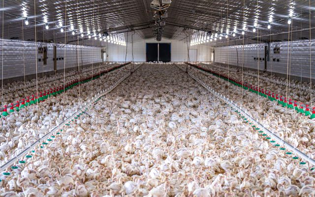
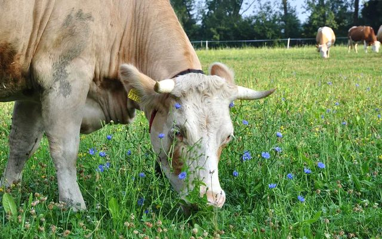
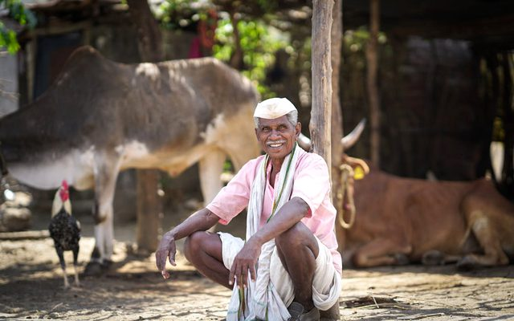
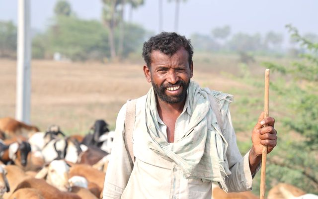
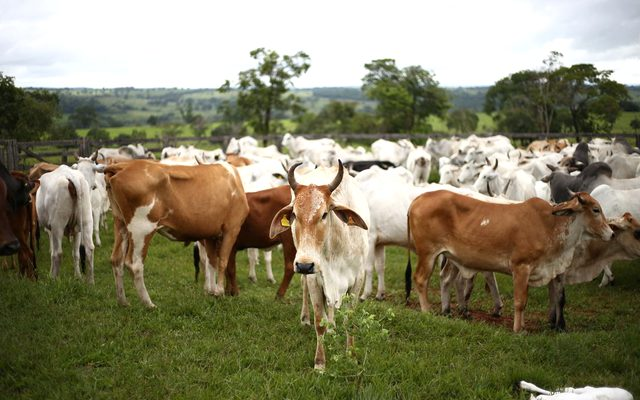
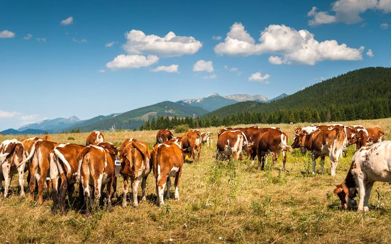
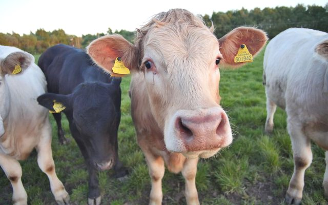
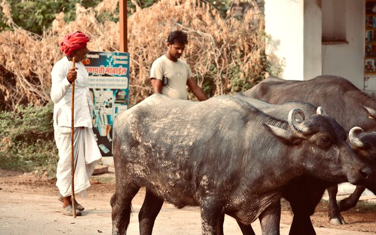
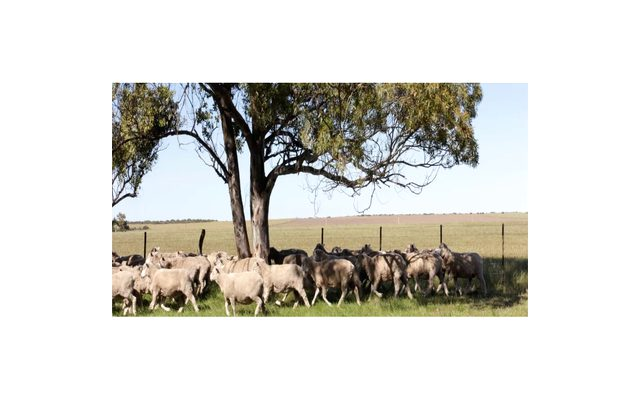
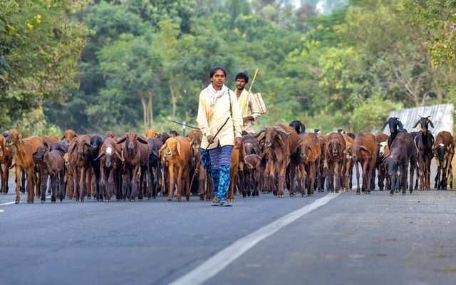
Links open external websites. Coal Controller Organisation does not endorse third-party content.


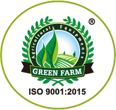
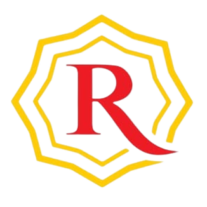


Disclaimer: Inclusion of an agency on this list does not constitute endorsement, empanelment, or recommendation by the Coal Controller Organisation or the Ministry of Coal, Government of India. Mine owners and project proponents are advised to conduct their own due diligence process before engaging any agency.
Specialist in livestock production management with expertise in optimising herd productivity, feed systems, and sustainable livestock farm operations.
Expert in livestock production management, focusing on animal husbandry practices, production efficiency, and integrated livestock systems for sustainable farm development.
Specialist in farm management and livestock development at Anand Agricultural University (AAU), with expertise in reproductive health, herd management, and farm enterprise development.
Disclaimer: Inclusion of an expert does not constitute endorsement, empanelment, or recommendation by the Coal Controller Organisation or the Ministry of Coal, Government of India. Users are advised to independently verify credentials and suitability before engaging any individual.